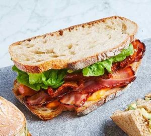

BLT

Posh BLT
Love a BLT? Try our new take on the classic sandwich, with the staple
ingredients of bacon, lettuce and tomato, plus some added extras for oomph.
Ingredients
- 6 rashers smoked streaky bacon
- 1 tbsp maple syrup
- 3 tbsp mayo
- ½ tbsp sundried tomato paste
- 4 slices sourdough
- 6 chopped sundried tomatoes
- leaves of 1 Little Gem
Steps
- Heat the grill to high. Put the bacon on a foil-lined baking sheet and drizzle with
the maple syrup. Grill for 7-10 mins until crisp. Mix the mayo with the sundried
tomato paste, then spread over two of the sourdough slices. Top with the bacon,
sundried tomatoes and Little Gem. Season with black pepper, top with the remaining bread and halve.